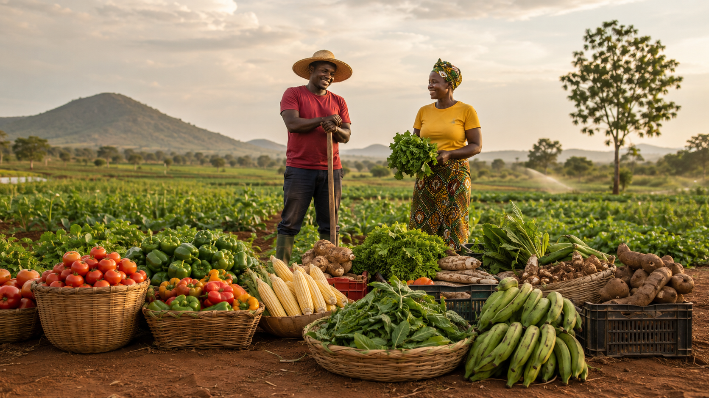

When you take a bite of a tomato freshly plucked from the vine, you can taste more than flavor; you taste life itself.
At Exploreland Markets, that’s exactly what we want every meal to feel like: real, fresh, and full of life.
As an avid agricultural and greenlife explorer, we often talk about soil health, yields, and sustainability metrics. But when it comes to Exploreland Markets, the story isn’t about numbers; it’s about a feeling. The sheer joy of eating food that tastes exactly as nature intended, delivered by a brand that truly cares.
In a fast-paced world, what we truly crave is a connection: to the earth, to our health, and to the people who grow our food. Exploreland Markets isn’t just a store; it’s the warm handshake between the devoted farmer and your kitchen table.
Let’s take you back to where it all began…
For years, Exploreland Farms has been nurturing the dream of greener living, blending agroforestry, sustainability, and real estate into a lifestyle that respects both people and the planet.
From that same vision, Exploreland Markets was born; a natural next step that connects the farm directly to your home.
It’s not just about selling food; it’s about bringing the farm experience closer to families, making it easy to eat fresh, live healthy, and enjoy the beauty of nature’s best.
We saw a growing problem where people were eating more processed food, while farms producing fresh, honest produce were struggling to reach consumers, and we decided to bridge that gap.
That’s how Exploreland Markets began: a simple idea with a powerful mission; to make freshness a daily reality.

The secret to the premium difference lies at Exploreland Farms, the heart of the operation. This isn’t mass-production; it’s a living, breathing model of eco-living where everything is done with intention.
Imagine a farmer who sees their land not as acreage, but as a legacy. That’s the Exploreland way. They practice responsible land stewardship and reforestation, ensuring the land is healthier after a harvest than it was before. This commitment is the meticulous growth of farm produce like our pepper and every crisp vegetable, healthy beef products, etc.
Exploreland Markets is more than a shopping experience; it’s a promise to your family. It’s the brand that allows you to be a conscious consumer without sacrificing convenience or quality.
Products That Still Has Its Spark
We all know the disappointment of tasteless, tired products. Exploreland Farms solves this by making the journey from the field to your shopping bag incredibly short. Their fresh vegetables and products are often harvested just yards from the Markets, meaning they retain their maximum nutrients and vibrant flavour. When you bite into our tomato, you’re not just eating a fruit; you’re tasting the sunshine and the rich, clean soil it grew in.
Luxury Is Peace of Mind
Today’s real luxury isn’t about excess; it’s about trust and transparency. When you place an Exploreland Farms’ product in your cart, you gain:
- A Clean Conscience: You are actively supporting a Nigerian enterprise dedicated to environmental healing and ethical practices.
- Health Certainty: You know your family is consuming food that is responsibly sourced and free from unnecessary compromises.
- Community Connection: You are empowering the local farmers and communities who are the true caretakers of the land.
Exploreland Markets is redefining what it means to live well. It’s a beautiful, sustainable, and delicious rhythm of life that brings the quiet strength of the earth right into the bustle of your modern home.